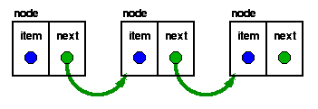
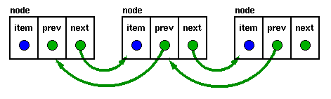

|
Data Structures and Algorithms
|
| 3.2 Lists
|
The array implementation of our collection has one serious drawback: you must
know the maximum number of items in your collection when you create it. This
presents problems in programs in which this maximum number cannot be predicted
accurately when the program starts up. Fortunately, we can use a structure
called a linked list to overcome this limitation.
3.2.1 Linked lists
The linked list is a very flexible
dynamic data structure:
items may be added to it or deleted from it at will.
A programmer need not worry about how many items a program will have to
accommodate:
this allows us to write robust programs which require much less
maintenance.
A very common source of problems in program maintenance is the
need to increase the capacity of a program to handle larger
collections:
even the most generous allowance for growth tends to prove
inadequate over time!
In a linked list, each item
is allocated space as it is added to the list.
A link is kept with each item to the next item in the list.
|

|
Each node of the list has two elements
- the item being stored in the list and
- a pointer to the next item in the list
The last node in the list contains a NULL pointer to indicate that it
is the end or tail of the list.
|
As items are added to a list,
memory for a node is dynamically allocated.
Thus the number of items that may be added to a list is limited only
by the amount of memory available.
Handle for the list
The variable (or handle) which represents the list is simply a pointer
to the node at the head of the list.
Adding to a list
The simplest strategy for adding an item to a list is to:
- allocate space for a new node,
- copy the item into it,
- make the new node's next
pointer point to the current head of the list and
- make the head of the list point to the newly allocated
node.
This strategy is fast and efficient, but each item is added to
the head of the list.
An alternative is to create a structure for the list which
contains both head and tail pointers:
struct fifo_list {
struct node *head;
struct node *tail;
};
The code for AddToCollection
is now trivially modified to make a list in which the
item most recently added to the list is the list's tail.
The specification remains identical to that used for the array implementation:
the max_item parameter to ConsCollection is simply ignored
[7]
Thus we only need to change the implementation. As a consequence, applications
which use this object will need no changes. The ramifications for the cost of
software maintenance are significant.
The data structure is changed, but since the details (the attributes of the
object or the elements of the structure) are hidden from the user, there is no
impact on the user's program.
Select here to load collection_ll.c
Points to note:
- This implementation of our collection can be substituted for the first one
with no changes to a client's program. With the exception of the added
flexibility that any number of items may be added to our collection, this
implementation provides exactly the same high level behaviour as the previous
one.
- The linked list implementation has exchanged flexibility for efficiency
- on most systems, the system call to allocate memory is relatively expensive.
Pre-allocation in the array-based implementation is generally more efficient.
More examples of such trade-offs will be found later.
The study of data structures and algorithms will enable you to make the
implementation decision which most closely matches your users'
specifications.
3.2.2 List variants
Circularly Linked Lists
By ensuring that the tail of the list is always pointing to the
head, we can build a circularly linked list.
If the external pointer (the one in struct t_node
in our implementation),
points to the current "tail" of the list,
then the "head" is found trivially via
tail->next,
permitting us to have either LIFO or FIFO lists with only
one external pointer.
In modern processors, the few bytes of memory saved in this way would
probably not be regarded as significant.
A circularly linked list would more likely be used in an application
which required "round-robin" scheduling or processing.
Doubly Linked Lists
|

|
Doubly linked lists have a pointer to the preceding item as well as
one to the next.
|
They permit scanning or searching of the list in both directions.
(To go backwards in a simple list, it is necessary to go back to the
start and scan forwards.)
Many applications require searching backwards and forwards through
sections of a list: for example, searching for a common name like
"Kim" in a Korean telephone directory would probably need much
scanning backwards and forwards through a small region of the
whole list, so the backward links become very useful.
In this case, the node structure is altered to have two links:
struct t_node {
void *item;
struct t_node *previous;
struct t_node *next;
} node;
Lists in arrays
Although this might seem pointless (Why impose a structure which has the
overhead of the "next" pointers on an array?), this is just what memory
allocators do to manage available space.
Memory is just an array of words. After a series of
memory allocations and de-allocations, there are blocks of free memory
scattered throughout the available heap space. In order to be able to
re-use this memory, memory allocators will usually link freed blocks
together in a free list by writing pointers to the next free
block in the block itself. An external free list pointer pointer points
to the first block in the free list.
When a new block of memory is requested, the allocator will generally
scan the free list looking for a freed block of suitable size and
delete it from the free list (re-linking the free list around the
deleted block).
Many variations of memory allocators have been proposed: refer to a text
on operating systems or implementation of functional languages for
more details. The entry in the index under garbage collection
will probably lead to a discussion of this topic.
- Dynamic data structures
- Structures which grow or shrink as the data they hold changes.
Lists, stacks
and trees are all dynamic structures.
© John Morris, 1998